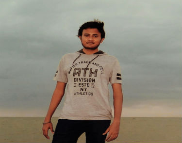
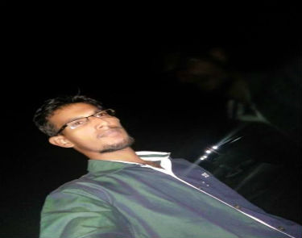
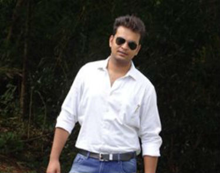
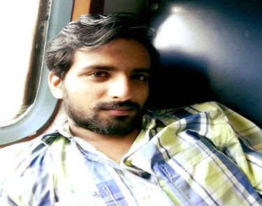

PRALASH
- 
PRATYUSH AGARWAL
Pratyush agarwal is a student of National Institute of Technology Calicut pursuing his Master's
in Computer Applications.He graduated from Chtrapati Shahuji Kanpur University where he completed Bachelor's
degree in mathematics.Pratyush has excellence in back-end development .
He has worked with elite companies like informatica,get solutions and others.He has excellence in technologies like java ruby rails.
Email:pratyushagarwal3@gmail.com
- 
RAHUL KUMAR
Rahul kumar is currently pursuing his masters in National Institute of Technology calicut and has completed his graduation from Magadh University Patna.He has
excellence in Front end tools like grails,dreamweaver,javascript,jquery angularJS, KnockoutJS.Rahul has worked with the IT department
of mankind and was appreciated for his contribution in their website development
Email:rjrahulabc30@gmail.com
- 
LAKSHIT GARG
Lakshit Garg is a student of National Institute of Technology Calicut pursuing his Master's in Computer Application.He completed his graduation in
Computer application from Guru Gobind Singh Indraprastha University,New Delhi.
Currently working with US based startup,Eltropy ,
he is also the secretary of social society Making a Difference
by being the difference.He has excellence in both front-end and
back-end tools like grails,groovy,javascript,angularJS,knockoutJS,postgresql.
Email:lg@lakshitgarg.com
- 
SHIVAM AGARWAL
Shivam Agarwal is a student of National Institute of Technology Calicut pursuing his Master's in Computer Application
Shivam has obtained his bachelor's degree from Babu banarasi das university,Lucknow.He has worked with esoft technologies as a front end developer and has excellence in technologies like javascript,jquery,ruby,HTML5
Email shivam00123@gmail.com